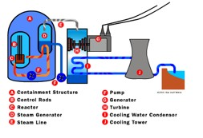
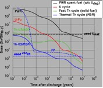
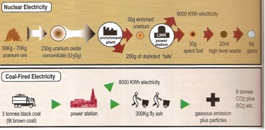
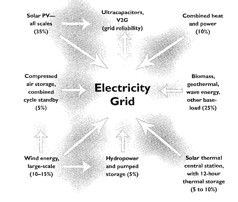

| METALS IN MEDICINE AND THE ENVIRONMENT | |||
| Metals | Nuclear Power: The Power to Save or Destroy | ||
Nuclear power has the ability to produce energy without releasing harmful greenhouse gas emissions into the atmosphere. However, the energy source is also dangerous because it produces radioactive waste that has to be sequestered from the environment for 10,000 years, so as not to cause harm to public health or the environment. Introduction Nuclear power is a relatively new energy source that is used commonly in the world and the US. Only 20% of the electricity generated in the US comes from nuclear power. Some countries such as France generate 77% of their electricity from nuclear power. The diagram in Figure 1 demonstrates how a nuclear power plant works. Electricity is generated in a nuclear power plant by harvesting the heat released when an atom such as uranium is split in half (1).  Figure 1: Diagram showing how a nuclear power plant works (1).
Although many people assert that nuclear power is an environmentally conscious energy source because no greenhouse gases are emitted, it is in no way shape or form a sustainable or renewable energy source. Mining uranium can have similar problems that arise with coal mining with the added problem that uranium mill tailings, waste formed by extracting the uranium, are radioactive. Only 0.1% to 0.2% of uranium ore is made up of uranium, and of that only 0.7% of this uranium is in the correct form to be used in the reactor (2). Uranium mining because sulfuric is used to extract the uranium causes contamination to ground water from radioactive metals and other metals. In situ leaching is particularly harmful as diagramed in Figure 2, because the rock is not removed from the ground instead sulfuric is merely pushed into a deep aquifer(3).
A nuclear power plant meltdown such as the one that occurred in Chernobyl caused a significant amount of radioactive material to journey through Ukraine and all of Europe. This huge radiation exposure largely occurred because there was no containment building. In Three Mile Island a meltdown also occurred, but most of the radiation was secured inside the containment building. Very strict restrictions have made nuclear power plants safer. Nuclear power plants only emit 0.009 millirems/year, which is a negligible amount compared to natural background radiation (4). Therefore, nuclear power plants themselves are fairly safe.
Figure 3: The radioactivity of various different radioactive metals in HLW over time (2).
Research has shown that thorium as a fuel source has distinct advantages over uranium. Thorium is found at a higher concentration in the earth and all thorium can be used in the reactor, so less will have to be mined. The use of thorium rather than uranium will decrease the magnitude and radioactivity of waste. As shown in Figure 4, the radioactivity of the waste using a typical U-Pu fuel without processing is shown by the black line. The Th-U mixtures both produce waste substantially lower in radioactivity than this line (5). When using thorium spent fuel cannot be used in nuclear weapons, so thorium is safer to use (6). The use of thorium in nuclear energy is still at the beginning stages. More research is necessary to be sure that these benefits are true. A large scale switch to thorium from uranium might be made in the near future, but cannot be done presently.  Figure 4: The radioactivity of waste over time with the use of different fuels. (5)
 Figure 5: Comparing nuclear and coal power as sources for electricity. *8,000 kWh average use per person per year for developed country (2) Nuclear Power and Renewable Energy Sources  Figure 6: Diagram representing how a diverse number of renewable energy sources can provide all of US electricity by 2050 (9)
Therefore, although nuclear power does pollute the environment and cause some negative impacts to human health, in comparison to the other solution namely investing in coal it is less hazardous to the environment. If the US invests in reprocessing fuel and using thorium rather than uranium, nuclear power’s impact on the environment can be farther reduced. Renewable energy sources such as wind and solar power are much cleaner than nuclear power, but because there is no efficient means to store energy these energy sources cannot yet provide all the energy necessary to power America. Investing in these energy sources is key to prevent future harm to the environment and prepare the US for switching over to these sources when the technology to store electricity is discovered. However, because of global warming concerns and huge negative impacts that coal has on the environment and public health, coal should be phased out before nuclear power. Even increasing nuclear power slightly to reduce the impact coal has on the environment would be a reasonable temporary solution. However, primarily the US should invest in more renewable energy sources particularly in states that have large amounts of wind and are sunny nearly every day of the year. Hopefully, phasing out coal and replacing it with renewable energy sources and cleaner nuclear power will provide a good stepping stone to a future where the US runs entirely on renewable energy. Create a website that would include the following:
The website would attempt to attract the everyday person, who does not know very much about energy sources. Author: Rebecca Schwantes
|
|||
| Topics | |||
|
|||